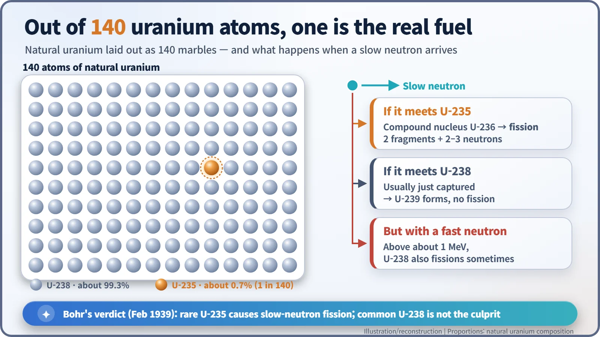
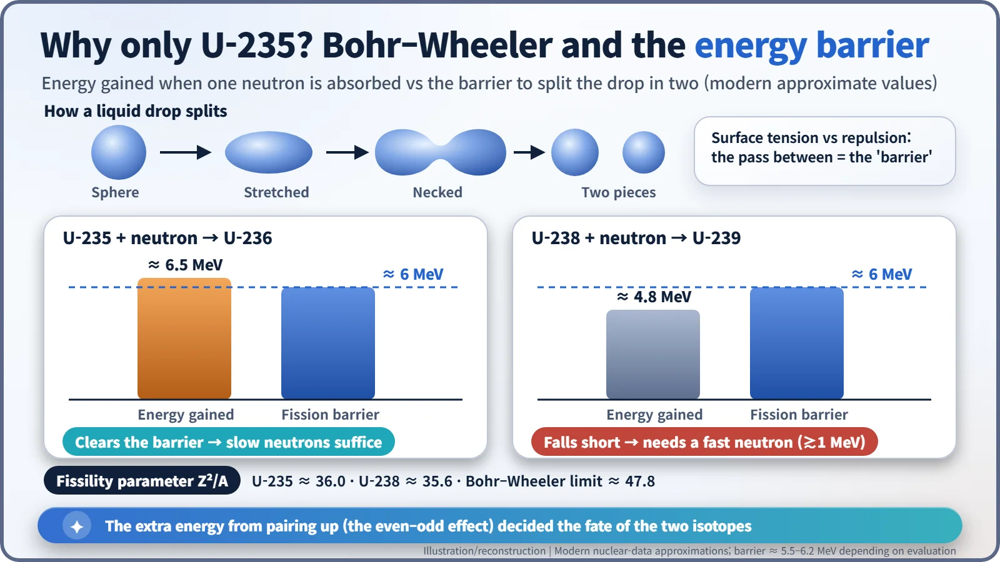
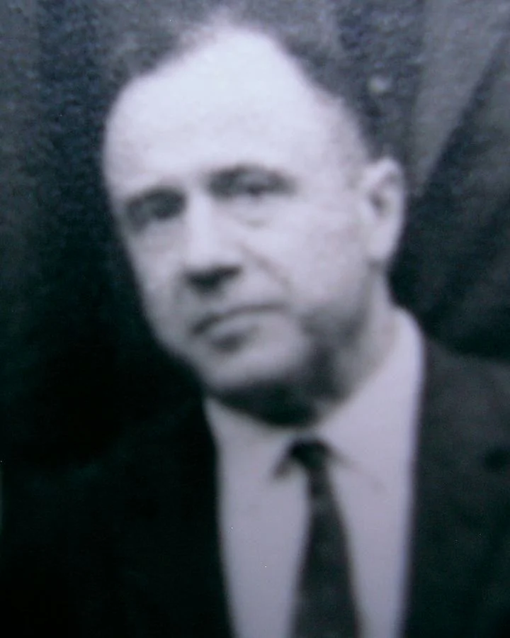

Nuclear History · 067
One Suspect in 140 — Bohr, Wheeler and the Case of Uranium-235 (1939)
A winter walk in Princeton pinned slow-neutron fission on one uranium atom in 140, and a theory published on the day war began explained why.
In February 1939 Niels Bohr solved a fission puzzle on a short winter walk in Princeton: slow neutrons split the rare isotope uranium-235, about one atom in 140, not the common uranium-238. With John Wheeler he turned the idea into a full theory, published on 1 September 1939, and in early 1940 separated samples from Alfred Nier confirmed it. The answer made isotope separation the central challenge of nuclear energy.
The case file
In early 1939, physicists had only just confirmed that a uranium nucleus can split in two when it is struck by a neutron. But the evidence at the scene did not add up. Uranium split when hit by very slow neutrons, and it also split when hit by very fast ones. Yet at one particular neutron speed, where uranium was known to swallow neutrons greedily, fission did not increase at all. If there was a single suspect, its story was full of holes. The detectives who cracked the case were Niels Bohr (1885–1962) and his younger colleague John Archibald Wheeler (1911–2008).
An unsolved case lands in Princeton
Bohr arrived in New York on 16 January 1939 and settled in for a stay at the Institute for Advanced Study in Princeton, just as the news of fission was electrifying American physics. Also in Princeton was the physicist George Placzek, who was deeply sceptical of the new fission ideas. [6] [4]
Placzek's objection went like this. Uranium absorbs neutrons especially strongly at an energy of about 25 electronvolts (eV, a convenient unit of energy at the atomic scale). Physicists call such a sharp peak a "resonance". If one and the same nucleus was doing both the absorbing and the splitting, fission should also jump at that resonance. No such jump had been seen. [5]
A deduction on a winter walk
One morning in early February, Bohr talked the problem over at breakfast with Léon Rosenfeld and Placzek, then walked to Fine Hall, where the physicists had their offices. Wheeler later recalled: "In the course of the walk he concluded that slow-neutron fission is caused by 235U and fast-neutron fission by 238U." [4]
The key was realising that there were two suspects, not one. Natural uranium is a mixture of two isotopes, forms of the same element with the same number of protons but different numbers of neutrons. About 99.3% is uranium-238, and only about 0.7%, roughly 1 atom in 140, is uranium-235. The greedy absorber at the resonance was the common U-238. The nucleus that split with slow neutrons was the rare U-235. [6]

Bohr wrote up the argument in a short letter dated 7 February, published in the 15 February 1939 issue of Physical Review (volume 55, page 418). Placzek was not easily won over. According to a story often told, Wheeler bet $18.36 against Placzek's one cent that Bohr was right, and Placzek, having lost, duly sent him a money order for one cent. [1] [5]
Why U-235? A drop that must climb a hill to split
Bohr and Wheeler turned the hunch into numbers using the liquid-drop model, which treats the nucleus like a wobbling drop of liquid. Inside the drop, a kind of surface tension (from the nuclear force) holds it together, while the electric repulsion between protons tries to push it apart. To go from a sphere to a stretched shape, then to a pinched "peanut", and finally to two pieces, the drop has to climb over an energy hill. That hill is the fission barrier. [2]
When a nucleus absorbs a neutron, it gains energy. Here the even–odd effect makes all the difference: nucleons are bound more tightly when they pair up. U-235 absorbs a neutron and becomes U-236, with an even number of neutrons, and gains about 6.5 MeV (million electronvolts). That is enough to get over a barrier of roughly 6 MeV, so even a nearly stationary neutron can trigger fission. U-238, whose neutrons are already paired, becomes U-239 and gains only about 4.8 MeV, short of the barrier. It splits only when the incoming neutron brings extra kinetic energy of about 1 MeV or more. So it would be wrong to call U-238 a nucleus that "never" fissions; it simply needs a fast neutron, and even then only some of the time.

The pair also introduced a fissility parameter, the square of the proton number divided by the mass number, Z²/A. The larger it is, the more easily a nucleus splits. Uranium comes in at about 36, already a good way towards the limit of about 47.8 that Bohr and Wheeler estimated, beyond which a nucleus could not hold a spherical shape at all. [4]

1 September, and a parcel from Minnesota
Their 25-page paper, "The Mechanism of Nuclear Fission", was received on 28 June and published in Physical Review (volume 56, page 426) on 1 September 1939. By grim coincidence, that was the very day Germany invaded Poland and the Second World War began. [2]
A deduction still needs proof. In February 1940 Alfred O. C. Nier (1911–1994) at the University of Minnesota used a mass spectrometer of his own design, a device that bends atoms along different paths according to their mass, to separate tiny, invisible samples of U-235 and U-238. He sent them by post to Columbia University. There John R. Dunning, Eugene T. Booth and Aristid von Grosse tested them with neutrons from the Columbia cyclotron in late February and early March and found that slow-neutron fission came from the U-235 fraction. Their report appeared in Physical Review on 15 March 1940, and a follow-up in April. Bohr's deduction had become a proven fact. [3] [6]
How one atom in 140 shaped an industry
The verdict left a heavy assignment. If the real fuel was only one atom in 140, raising that share, isotope separation or "enrichment", became the central task. The two isotopes behave identically in chemistry, so they can only be sorted by their small difference in mass. Bohr is recalled as having remarked, in substance, that separating enough would take the resources of an entire country. Today, many power reactors run on uranium enriched to a few per cent U-235, a direct descendant of that winter deduction in Princeton. [5]